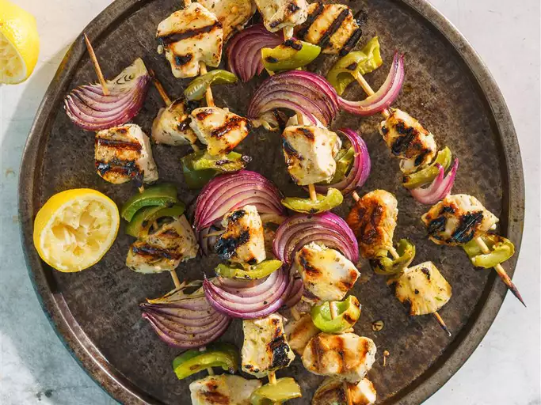

Marinated Greek Chicken Kabobs

Kabob-City here we come!
Marinated Greek chicken kabobs are boneless, skinless chicken breast pieces that are marinated in a Greek marinade made with lemon, garlic, dill, oregano, olive oil and other seasonings.
Ingredients
- 1 (8 ounce) container fat-free plain yogurt
- 1/3 cup crumbled feta cheese with basil and sun-dried tomatoes
- 1/2 teaspoon lemon zest
- 2 tablespoons fresh lemon juice
- 2 teaspoons dried oregano
- 1/2 teaspoon salt
- 1/4 teaspoon ground black pepper
- 1/4 teaspoon crushed dried rosemary
- 1 pound skinless, boneless chicken breast halves - cut into 1 inch pieces
- 1 large red onion, cut into wedges
- 1 large green bell pepper, cut into 1 1/2 inch pieces
Steps
- In a large shallow baking dish, mix the yogurt, feta cheese, lemon zest, lemon juice, oregano, salt, pepper, and rosemary. Place the chicken in the dish, and turn to coat. Cover, and marinate 3 hours in the refrigerator.
- Preheat an outdoor grill for high heat.
- Thread the chicken, onion wedges, and green bell pepper pieces alternately onto skewers. Discard remaining yogurt mixture.
- Grill skewers on the prepared grill until the chicken is no longer pink and juices run clear.
Go Back